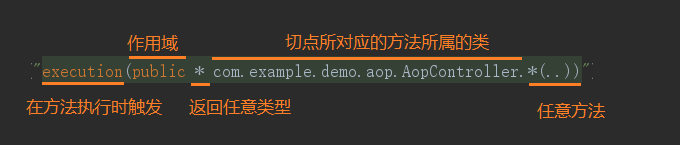
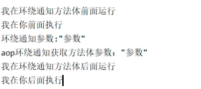

aop个人简单整理
定义切面类：在类上添加@Aspect 和@Component 注解即可将一个类定义为切面类。
@Aspect 注解 使之成为切面类
@Component 注解 把切面类加入到IOC容器中
Controller代码
public class AopController {
("test")
public void aaa(){
System.out.println("我是aaa方法体");
int i=1/0;
}
("testAround")
public void aroundAopTest(String param){
System.out.println("环绕通知参数:"+param);
}
}
切面类代码
package com.wcf.aop.Aspect;
import org.aspectj.lang.ProceedingJoinPoint;
import org.aspectj.lang.annotation.*;
import org.springframework.stereotype.Component;
import javax.annotation.PostConstruct;
public class AopAspect {
("execution ( public * com.wcf.aop.Controller.Aop*.*(..) )")
public void testAspect(){
}
("execution ( public * com.wcf.aop.Controller.AopController.aroundAopTest(String) ) && args(param)")
public void aroundAspect(String param){
}
("testAspect()")
public void before(){
System.out.println("我在你前面执行");
}
("testAspect()")
public void after(){
System.out.println("我在你后面执行");
}
("testAspect()")
public void doAfterThrowingGame(){
System.out.println("出异常我就执行了");
}
("aroundAspect(param)")
public void Around(ProceedingJoinPoint pjp,String param){
try {
System.out.println("我在环绕通知方法体前面运行");
pjp.proceed();
System.out.println("aop环绕通知获取方法体参数："+param);
System.out.println("我在环绕通知方法体后面运行");
} catch (Throwable throwable) {
System.out.println("我在环绕通知方法体报错我运行了");
throwable.printStackTrace();
}
}
}
pointcut（）中切面规则

无报错环绕通知运行结果

有报错环绕通知结果
对比代码和结果 运行顺序就一目了然了 很好理解 记录一下
转载请注明来源，欢迎对文章中的引用来源进行考证，欢迎指出任何有错误或不够清晰的表达。邮件至 wcfinyourheart@163.com
文章标题:aop个人简单整理
本文作者:wcf
发布时间:2020-01-17, 09:44:03
最后更新:2020-01-19, 17:27:43
原始链接:http://1007638786.github.io/2020/01/17/aop%E4%B8%AA%E4%BA%BA%E7%AE%80%E5%8D%95%E6%95%B4%E7%90%86/版权声明: "署名-非商用-相同方式共享 4.0" 转载请保留原文链接及作者。